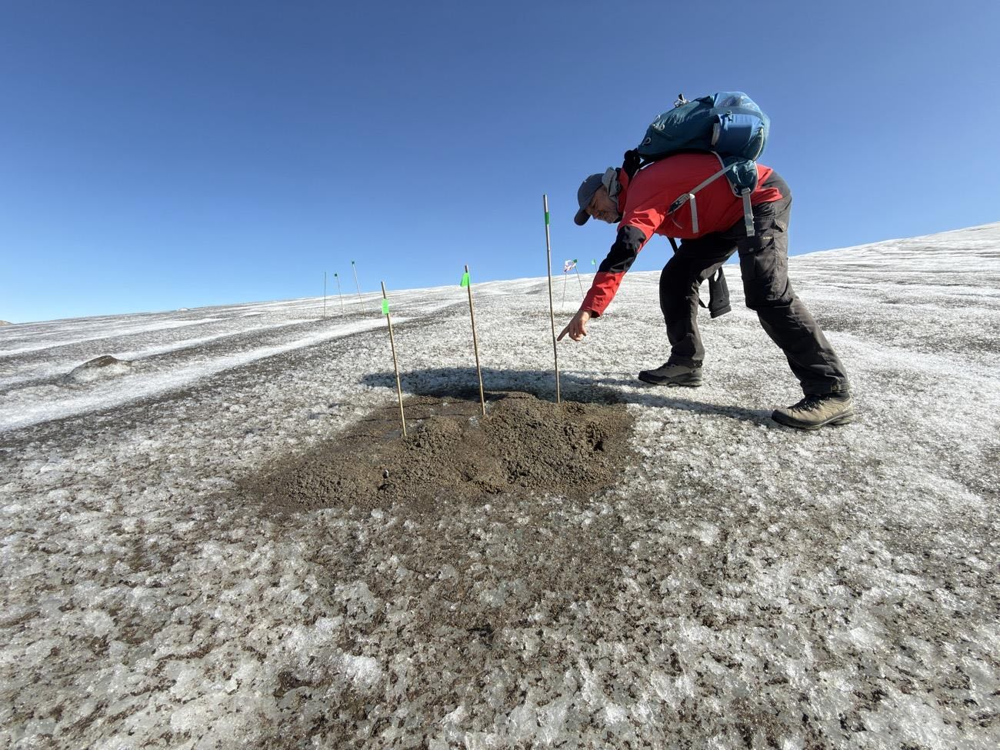
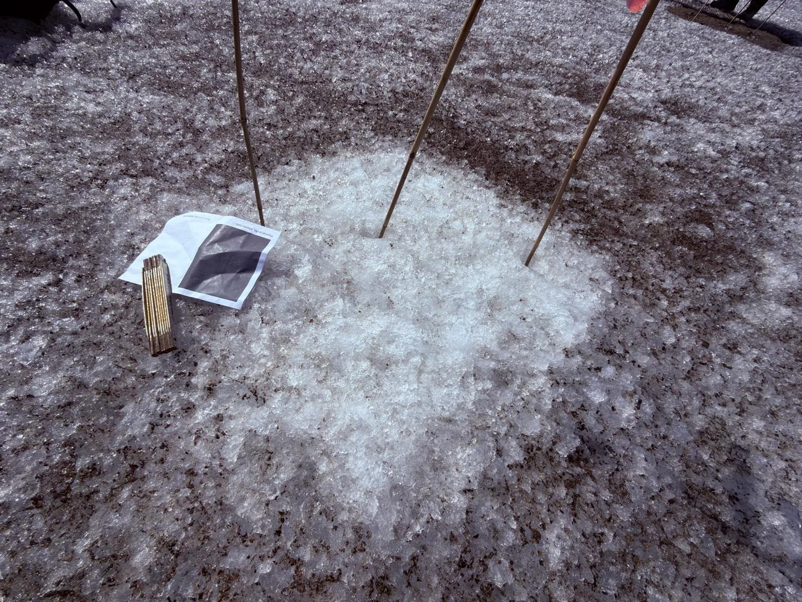
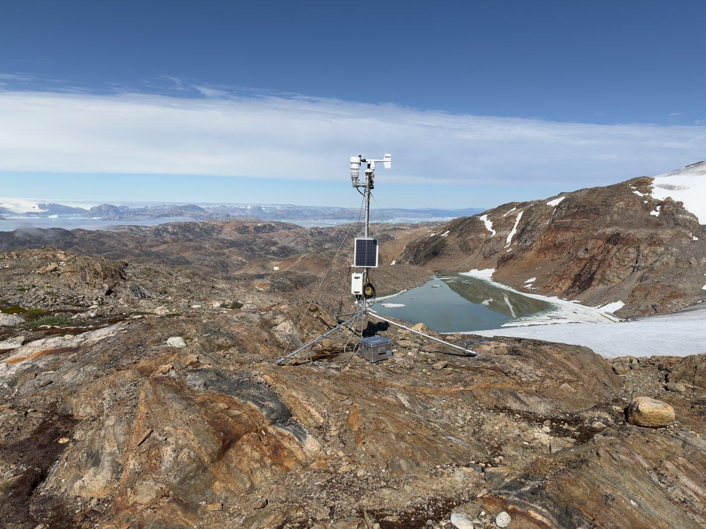
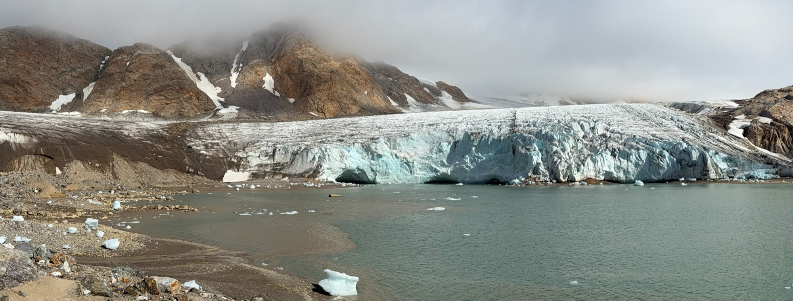
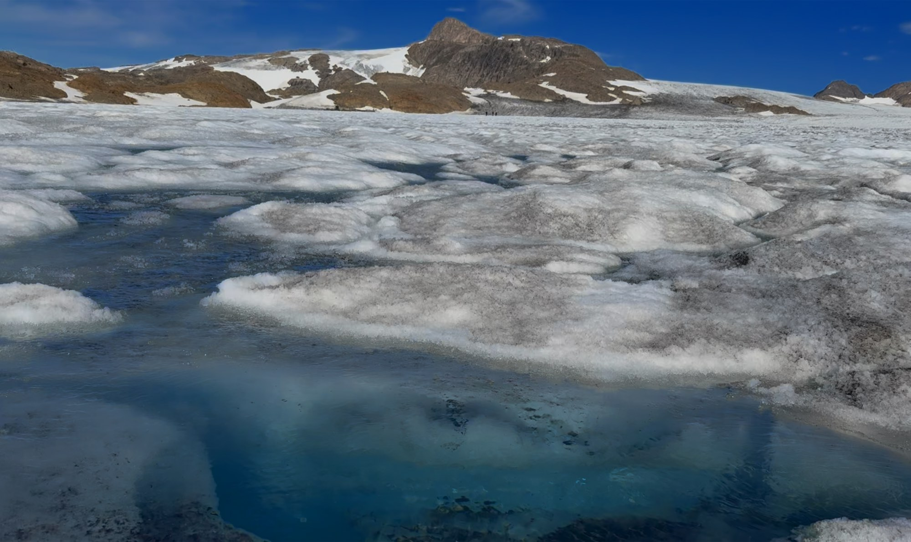

To pletter is, få meter fra hinanden
I august 2026 lagde en gruppe forskere felter ud på en gletsjer i Østgrønland. Nogle felter blev dækket med mørkt sediment, andre fik lov at ligge som ren is. Så satte de pinde i og ventede seks dage.


Resultatet kunne ses uden at måle: den lyse plet stod som en lille forhøjning, fordi den havde smeltet langsommere end alt omkring. Med pindene blev det til tal.
Albedo er det eneste der adskilte de to felter. Samme sol, samme luft, samme is nedenunder. Den mørke overflade kastede mindre lys tilbage, absorberede mere energi — og smeltede dobbelt så hurtigt.
Hvad er albedo?
Albedo er et tal mellem 0 og 1. Det fortæller, hvor stor en del af sollyset en overflade kaster tilbage.
Frisk sne har albedo omkring 0,85. Den kaster 85 % af lyset tilbage og beholder kun 15 %. Asfalt har omkring 0,10. Den beholder 90 %.
Det lys, der ikke bliver kastet tilbage, bliver til varme. Derfor fortæller albedo, hvor meget solen kan varme en overflade op — eller smelte den.
Er albedo bare, hvor lys noget ser ud?
Gæt. Svaret finder I selv i trin 2 — når I sammenligner jeres egen måling med satellittens.
Mål albedo i skolegården
Metoden forskerne brugte på isen virker lige så godt på asfalt, græs og fliser. I skal bruge en telefon, et printet referencekort og cirka 20 minutter udenfor.
Se videoen: Sådan måler vi albedo Referencekortet lægges på overfladen og fotograferes sammen med den. Felterne på kortet har kendt albedo — resten regner appen ud.
Fremgangsmåden, måleskemaet og opgaverne står i øvelsesvejledningen.
Appen skal I bruge på mobilen. Scan koden — eller skriv geo.sg.dk/albedo. Koden står også på referencekortet, så I har den med ud.
Se det samme sted fra rummet
Satellitten Sentinel-2 flyver hen over Danmark hver anden til tredje dag og måler, hvor meget lys Jorden kaster tilbage. Nu hvor I har målt jeres egen skolegård, kan I slå den op — og sammenligne.
Satellitten ser Jorden i felter på 10 × 10 meter. Det lyder småt, men prøv at se skolegården for jer: hvor meget asfalt, græs, tag og grus ligger der inden for ti meter?
Åbn, når I har slået jeres egne tal op
På asfalten er I nogenlunde enige med satellitten. Asfalt ser ens ud i alt lys, og fladen er stor nok til, at satellitten kun ser asfalt. Metoden virker.
På græsset er I helt uenige. For jeres telefon er en græsplæne lige så mørk som asfalt. For satellitten er den flere gange så lys.
Derfor var I uenige om græsset
Er albedo bare, hvor lys noget ser ud? Næsten. Mørke ting har lav albedo, og lyse ting har høj. Men omkring halvdelen af solens energi er infrarødt lys, som er usynligt for os — og for jeres telefon. Albedo tæller det hele med.
For de fleste overflader gør det ingen forskel. Asfalt, beton og vand er lige så mørke i det usynlige lys som i det synlige. To slags overflader snyder:
- Planter ser mørke ud, men er lyse i infrarødt. Deres albedo er højere, end den ser ud.
- Sne og is ser kridhvide ud, men er mørkere i infrarødt. Deres albedo er lidt lavere, end den ser ud.
Og når satellitten ser mere end jeres flade
Klikker I i et hjørne, hvor asfalt, græs og tag mødes, lægger satellitten det hele sammen til ét tal. Det hedder en blandet pixel, og det er et af de største problemer i al satellitovervågning. Satellitkortet fortæller jer, om fladen er ensartet eller blandet.

For de nysgerrige: sådan måler satellitten · B- og A-niveau
Sentinel-2 måler ikke albedo direkte. Den måler, hvor meget lys Jorden kaster tilbage i 13 farvebånd, og albedoen beregnes bagefter ud fra fem af dem. De skarpeste bånd ser felter på 10 × 10 meter, de infrarøde 20 × 20.
Satellitten fotograferer hele Jorden mindst hver femte dag — over Danmark hver anden til tredje dag, fordi banerne overlapper så langt mod nord. Men skyerne bestemmer, hvor tit der er noget at se.
Vejrstationen på billedet står på klippen og ser ned på klippe, ikke på is, så den kan ikke bruges som facit for gletsjeren. Dér har vi to metoder: den 7. august 2026 gav satellitten 0,231 og referencekortet 0,265. 15 % fra hinanden — tæt nok til at de ser det samme, langt nok til at der er noget at forklare. Forklaringen står på siden om det faglige grundlag.
Præcis samme fælde ramte forskerne på gletsjeren
Da målingerne fra Grønland første gang blev sammenlignet med satellitten, var de tre gange fra hinanden. Forskerne havde målt tæt på iskanten — et sted hvor mørke sedimentbånd, smeltevandskanaler og ren is ligger inden for få meter.
Flyttede man sammenligningen ind på en ensartet flade længere oppe, passede det: satellit 0,23 mod jordmåling 0,27. Ikke fordi instrumenterne blev bedre, men fordi man målte det rigtige sted.
Tilbage til isen — hvad betyder det for Grønland?
Nu har I metoden. Så kan I regne på det samme som klimaforskerne gør, med tallene fra gletsjeren.
Ikke en detalje…
Grønlands indlandsis taber masse på to måder, som vejer omtrent lige tungt. Cirka halvdelen sker på overfladen, hvor sollyset smelter is og sne. Den anden halvdel sker ved at isen flyder ud i havet og kalver som isbjerge.

Albedo styrer den første halvdel. Og albedo er noget I kan måle — med en telefon og et stykke papir.

Regn selv: hvor meget smelter der?
Energien der smelter isen, er den del af sollyset overfladen ikke kaster
tilbage: Q · (1 − albedo). Med sollyset på isen i august, smeltevarmen
for is og isens massefylde kan I regne jer frem til de 20 og 40 centimeter selv —
regneopgaven med alle tal står i øvelsesvejledningen.
Den onde spiral
Smeltevand gør isen våd og mørk. Mørk is smelter hurtigere — og giver endnu mere smeltevand. Smeltningen forstærker sig selv.
Mere om den onde spiral: støv, sod og mørkezonen
Når sne og is smelter, bliver støv, sod og sand liggende tilbage på overfladen. Det bliver koncentreret, overfladen bliver mørkere, albedoen falder — og så smelter det endnu hurtigere. Smeltningen forstærker sig selv.
Det er derfor der findes et bælte langs Grønlands vestkyst hvor isen er markant mørkere end omgivelserne. Det kaldes mørkezonen, det er vokset gennem de seneste årtier, og det er en af de ting der gør fremtidens afsmeltning svær at forudsige.
Hvad forskerne stadig ikke ved præcist
Urenhederne på isen er ikke jævnt fordelt, de skifter fra år til år, og en del af dem er levende — snealger vokser når det bliver varmere og gør isen mørkere. En klimamodel der regner med fast albedo, rammer derfor systematisk for lavt.
Og så er der den anden halvdel: isen der flyder ud i havet. Ved Sermilik løber Helheim Gletsjer ud i fjorden, hvor varmt atlanterhavsvand når helt ind til gletsjerfronten og smelter den nedefra. Den del kan et referencekort ikke måle — men den fylder lige så meget i regnskabet.
Gå med på gletsjeren
I har målt jeres egen asfalt, fundet stedet fra rummet og regnet på, hvor meget der smelter. Så er der kun ét tilbage: at se det.
Mål gletsjeren med jeres eget værktøj
Sæt dronevideoen på pause et sted hvor både gryden og den lyse is er i billedet, og tag et skærmbillede. Læg det ind i albedo-appen — nøjagtig den samme, I brugte på skolegården — og vælg «Foto uden referencekort». Der ligger intet kort på isen, så I må bruge isen selv som reference: markér først et stykke lys is, og derefter vandet.
Men hvad er isens albedo egentlig? Et sted mellem 0,4 og 0,6. Appen starter på 50 %. Ret tallet til 40 og til 60, og se, hvor meget vandets albedo flytter sig. Jeres svar kan aldrig blive mere sikkert end den reference, I vælger. Det problem havde forskerne også — med deres første referencekort.
Nu måler I grønlandsk albedo med jeres eget instrument. Og så er spørgsmålet igen det samme som i trin 2: hvor meget kan I stole på tallet? Billedet er taget skråt fra en drone, lyset rammer skævt, og kameraet har selv justeret eksponeringen undervejs. Diskutér hvilke af de fejlkilder der ville forsvinde, hvis I stod på isen med et pyranometer — og hvilke der ikke ville.